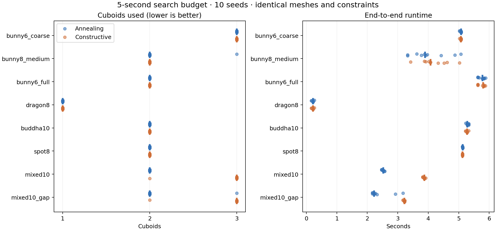
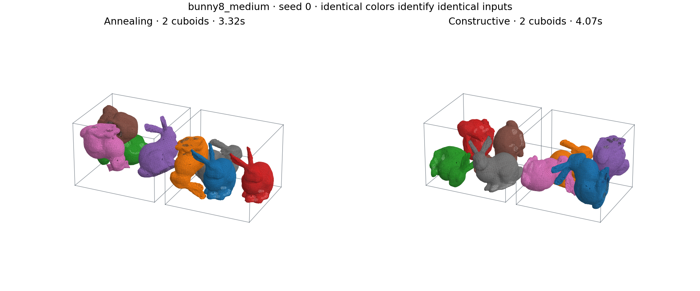
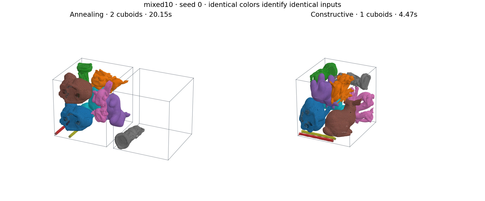

Across 80 matched case/seed pairs: annealing used fewer cuboids 17 times, constructive 1 times, and 62 tied.
At 20 seconds on three selected cases: constructive won 3 matched pairs, annealing won 0, and 6 tied. The mixed ten-model set fit in one cuboid with constructive search on all three seeds, versus two with annealing.
Measured 2026-11-11T08:59:07+0100. Eight fixed cases, ten seeds per method, five-second search budgets. Lower cuboid counts are better. No global optimality claim.

| Case | Algorithm | Bins median [min–max] | Wall s median | Search s median | Peak MiB max | Improved / runs |
|---|---|---|---|---|---|---|
| bunny6_coarse | Annealing | 3 [3–3] | 5.076 | 5.001 | 4.9 | 0/10 |
| bunny6_coarse | Constructive | 3 [3–3] | 5.074 | 5.001 | 5.4 | 0/10 |
| bunny8_medium | Annealing | 2 [2–3] | 3.899 | 3.802 | 7.4 | 9/10 |
| bunny8_medium | Constructive | 2 [2–2] | 4.073 | 3.967 | 8.7 | 10/10 |
| bunny6_full | Annealing | 2 [2–2] | 5.780 | 5.001 | 56.7 | 0/10 |
| bunny6_full | Constructive | 2 [2–2] | 5.802 | 5.003 | 56.5 | 0/10 |
| dragon8 | Annealing | 1 [1–1] | 0.216 | 0.034 | 16.1 | 0/10 |
| dragon8 | Constructive | 1 [1–1] | 0.217 | 0.032 | 16.1 | 0/10 |
| buddha10 | Annealing | 2 [2–2] | 5.280 | 5.002 | 19.4 | 0/10 |
| buddha10 | Constructive | 2 [2–2] | 5.275 | 5.001 | 20.6 | 0/10 |
| spot8 | Annealing | 2 [2–2] | 5.128 | 5.001 | 10.2 | 0/10 |
| spot8 | Constructive | 2 [2–2] | 5.124 | 5.001 | 10.7 | 0/10 |
| mixed10 | Annealing | 2 [2–2] | 2.522 | 2.336 | 13.2 | 10/10 |
| mixed10 | Constructive | 3 [2–3] | 3.872 | 3.686 | 19.4 | 10/10 |
| mixed10_gap | Annealing | 2 [2–3] | 2.220 | 2.037 | 13.1 | 10/10 |
| mixed10_gap | Constructive | 3 [2–3] | 3.221 | 3.022 | 19.6 | 10/10 |
Independent verification: 160/160 outputs passed. 2693 same-bin pair checks; 255 pairs with both meshes closed. Bounds, rigid transforms, collisions and clearance were checked. 2438 pairs include open/nonmanifold models; solid containment is not certified for those surfaces.
Constructive backtracking varies insertion order and candidate orientations, places only nonconflicting models at wall/face coordinates or nearby perturbed positions, and undoes up to three placements at a dead end. After 32 backtracks it restarts. It uses no temperature schedule and never accepts an overlapping prefix. Both methods use the same collision kernel, gap, orientation preparation and ascending cuboid-count policy.
Seed zero is shown by a fixed selection rule, not selected as a best run. Container outlines show exact bounds; display spacing is not part of the packed coordinates.

The mixed set contains two each of the medium bunny, dragon, Buddha, drill and Spot. Container dimensions and gap use normalized model units; each model has longest dimension one.
| Case | Parts | Width × length × height | Gap | Total triangles |
|---|---|---|---|---|
| bunny6_coarse | 6 | 1.35 × 1.35 × 1.35 | 0.02 | 5,688 |
| bunny8_medium | 8 | 1.8 × 1.6 × 1.3 | 0.02 | 30,808 |
| bunny6_full | 6 | 1.5 × 1.5 × 1.5 | 0.02 | 416,706 |
| dragon8 | 8 | 1.5 × 1.5 × 1.5 | 0.02 | 88,816 |
| buddha10 | 10 | 1.2 × 1.2 × 1.2 | 0.02 | 155,360 |
| spot8 | 8 | 1.5 × 1.5 × 1.5 | 0.02 | 46,848 |
| mixed10 | 10 | 1.5 × 1.5 × 1.5 | 0.02 | 80,400 |
| mixed10_gap | 10 | 1.5 × 1.5 × 1.5 | 0.08 | 80,400 |
| Case | Algorithm | Bins median [min–max] | Wall s median | Search s median | Peak MiB max | Improved / runs |
|---|---|---|---|---|---|---|
| bunny6_coarse | Annealing | 3 [3–3] | 20.048 | 20.001 | 4.7 | 0/3 |
| bunny6_coarse | Constructive | 3 [3–3] | 20.048 | 20.001 | 5.5 | 0/3 |
| mixed10 | Annealing | 2 [2–2] | 20.153 | 20.001 | 13.0 | 0/3 |
| mixed10 | Constructive | 1 [1–1] | 4.473 | 4.286 | 15.3 | 3/3 |
| mixed10_gap | Annealing | 2 [2–2] | 20.152 | 20.001 | 13.0 | 0/3 |
| mixed10_gap | Constructive | 2 [2–2] | 20.200 | 20.001 | 13.9 | 0/3 |
Independent checks passed for 18/18 outputs; 435 same-bin surface pairs were checked.
At the larger budget, the complete greedy initializer gives the same feasible fallback to both methods. These are only three selected cases, so this is a budget-sensitivity check, not a second broad ranking.

| Model | Triangles | Closed manifold | Boundary / nonmanifold edges |
|---|---|---|---|
| bunny_coarse | 948 | False | 26 / 70 |
| bunny_medium | 3,851 | False | 60 / 141 |
| bunny_full | 69,451 | False | 223 / 0 |
| dragon | 11,102 | False | 0 / 803 |
| buddha | 15,536 | False | 0 / 1341 |
| drill | 3,855 | False | 67 / 0 |
| spot | 5,856 | True | 0 / 0 |
Sources: Stanford Computer Graphics Laboratory and Keenan Crane. Stanford research/free-redistribution terms; Spot CC0. Longest dimension normalized to one offline, original topology retained. Gaps are 0.02 except mixed10_gap at 0.08. No additional wall gap.
model name : 13th Gen Intel(R) Core(TM) i7-13700H; Linux; logical CPU 2; sequential runs, balanced order, input warm-up. Search budgets include greedy initialization but exclude loading, orientation preparation, final validation and output. End-to-end times include them. Independent verification is outside the timed run. CPU frequency and desktop activity were not fixed. The seed controls randomness, while wall-clock stopping introduces variability. Exact binaries are archived; the longer sweep and final package add a defensive empty-candidate check after the main sweep.
Build: GCC 15.2, C++17 Release, -O3. Detailed protocols and reproduction commands: benchmark README. Raw runs: CSV; JSONL; environment, hashes and cases; model provenance. Each raw run has its exact command, log, placement manifest and independently checked minimum surface distance.
Expert design review: GLM suggested bounded backtracking, Kimi emphasized a shared baseline and geometry, and DeepSeek highlighted orientation and interlocking risks. Their review used the supplied design, not repository access. Recommendations for skipping counts or adding wall clearance were not adopted because they conflict with the requested problem.